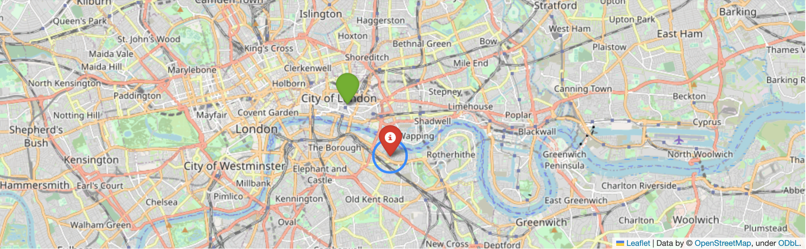

How to find a needle in a haystack using machine learning
ML
GIS
Author
Edu Gonzalo-Almorox
Published
October 17, 2023

Imagine you’re a detective trying to track down a suspect in London. You have a few leads, but nothing concrete. One says the suspect was seen near the Bank of England. Another says it is near the Thames River. And a third says it may be within 3160 meters of a particular satellite path.
Can you use machine learning to find the suspect? Yes, you can. You can do so by estimating the most likely point within a grid that reflects all possible locations where the suspect can be located.
In this blog I will show how to approach this problem from a machine learning perspective
Defining a grid
First, we need to define a grid that covers all possible locations where the suspect could be. We can do this using a meshgrid() function in NumPy. This function creates a two-dimensional grid of points, where each point is defined by a pair of coordinates.
We can set the boundaries of the grid to be the coordinates of the River Thames, the Bank of England, and the satellite path. This will ensure that the grid covers all possible locations where the suspect could be.
Code
import numpy as np # for data manipulation from sklearn.ensemble import RandomForestRegressor # for modelling from sklearn.multioutput import MultiOutputRegressor # for modelling from sklearn.metrics import mean_squared_error # for evaluationfrom sklearn.model_selection import train_test_split # for modelling import folium # for viz# Packages for functions -----------------------------------import numpy as npfrom scipy.stats import norm, lognormfrom sklearn.cluster import KMeansfrom sklearn.decomposition import PCAfrom sklearn.ensemble import RandomForestRegressorfrom sklearn.ensemble import RandomForestClassifierfrom sklearn.multioutput import MultiOutputRegressorfrom sklearn.multioutput import MultiOutputClassifierfrom sklearn.pipeline import make_pipelinefrom sklearn.metrics import accuracy_scoreimport warningswarnings.filterwarnings('ignore')# Define the set of coordinates ---------thames_coordinates = [ (51.489467, -0.236313), (51.468045, -0.216379), (51.464141, -0.190458), (51.473257, -0.179515), (51.480661, -0.173850), (51.484590, -0.148573), (51.483601, -0.137501), (51.485793, -0.129604), (51.494744, -0.122824), (51.508208, -0.118489), (51.509330, -0.096431), (51.501904, -0.058365), (51.508662, -0.043216), (51.506098, -0.030727), (51.490202, -0.028796), (51.485098, -0.007725), (51.490683, 0.000215), (51.502305, -0.005407), (51.506552, 0.005536)]boe_coordinates = [51.514171,-0.088438]sat_path_coords = [(51.451000, -0.300000), (51.560000, 0.000000)]# Define the grid of points ---------------lon_min, lon_max =-0.1, -0.04lat_min, lat_max =51.45, 51.55n_points =500lons = np.linspace(lon_min, lon_max, n_points)lats = np.linspace(lat_min, lat_max, n_points)lon_grid, lat_grid = np.meshgrid(lons, lats)
Calculate the distance
Once we have defined the grid, the next step is to calculate the distance from each point on the grid to each source of information. There are two types of distances we can use: Haversine distance andGreat Circle distance.
Haversine distance is the shortest distance between two points on a sphere. Great Circle distance is another type of distance we can use to calculate the distance between two points on a sphere. It’s the shortest distance along the great circle, which is the imaginary circle that encircles the sphere and passes through the two points.
Which distance we use depends on the specific case. In the case of the Thames, which is a long, winding river, the shortest distance between two points on the river may not be the shortest distance between the two points on the grid.
Code
def haversine(lon, lat, coords):''' Returns the haversine distance between a pair of coordinates and the coordinates of the grid Parameters ------------ lon: int, Longitude of a point in the grid lat: int, Latitude of a point in the grid coords: tuple, Coordinates of the piece of information Return ----------- distance : int Difference between pair of coordinates and the coordinates of the grid ''' lon1, lat1 = coords R =6371# Earth radius in km diff_lat = np.radians(lat1 - lat) diff_lon = np.radians(lon1 - lon) a = np.sin(diff_lat/2)**2+ np.cos(np.radians(lat1)) * np.cos(np.radians(lat)) * np.sin(diff_lon/2)**2 c =2* np.arctan2(np.sqrt(a), np.sqrt(1- a)) distance = R * creturn distance
The Great Circle distance, on the other hand, is another type of distance we can use to calculate the distance between two points on a sphere. It’s the shortest distance along the great circle, which is the imaginary circle that encircles the sphere and passes through the two points.
This type of distance can be a good alternative in cases where there is not a clear trajectory between the points. In the case of the Thames which is a long, winding river, the shortest distance between two points on the river may not be the shortest distance between the two points on the grid.
Code
def great_circle_distance(lon, lat, coords):''' Returns the great circle distance between a pair of coordinates and the coordinates of the grid Parameters ------------ lon: int, Longitude of a point in the grid lat: int, Latitude of a point in the grid coords: tuple, Coordinates of the piece of information Return ----------- distance : int Difference between pair of coordinates and the coordinates of the grid ''' lon1, lat1 = coords[0] lon2, lat2 = coords[1] R =6371# Earth radius in km diff_lat = np.radians(lat2 - lat1) diff_lon = np.radians(lon2 - lon1) a = np.sin(diff_lat/2)**2+ np.cos(np.radians(lat1)) * np.cos(np.radians(lat2)) * np.sin(diff_lon/2)**2 c =2* np.arctan2(np.sqrt(a), np.sqrt(1- a)) distance = R * c# Calculate the distance between each point on the grid and the great circle path distance_to_path = np.abs(distance * np.sin(np.radians(lon) - np.radians(coords[0][0])))return distance_to_path
Calculate the probabilities
Once we have the distances from the suspect to each point on the grid, we need to calculate the probability of the suspect being at each point. To do this, we can use a statistical distribution, such as a normal distribution or alognormal distribution.
A normal distribution is bell-shaped, with the highest probability in the center and the probability decreasing as you move away from the center.
Code
# Probability functions def gaussian_prob(distance_to_thames):''' Returns a gaussian probability Parameters ------------ distance_to_thames: int, distance (from the grid point) to thames (point) Return ----------- pdf : int, probability distribution of the distance to thames ''' pdf = norm.pdf(distance_to_thames, loc=0, scale=2730)return pdfdef normal_prob(distance_to_satellite_path):''' Returns a lognormal probability Parameters ------------ distance_to_satellite: int, distance (from the grid point) to points of the satellite path Return ----------- pdf : int, probability distribution of the distance to the satellite points of the path ''' pdf = norm.pdf(distance_to_satellite_path, loc=0, scale=3160)return pdf
A lognormal distribution, on the other hand, is skewed to the right, with a few very high values and many lower values.
The type of distribution we use depends on the nature of the data. In the case of the Bank of England coordinates, which are likely to be skewed to the right, we might use a lognormal distribution.
Code
def lognormal_prob(distance_to_boe):''' Returns a lognormal probability Parameters ------------ distance_to_boe: int, distance (from the grid point) to Bank of England (point) Return ----------- pdf : int, probability distribution of the distance to Bank of England ''' pdf = lognorm.pdf(distance_to_boe, s=0.625, scale=np.exp(8.460))return pdf
Once we have calculated the probability of the suspect being at each point on the grid, we need to combine these probabilities to get a single probability distribution for the suspect’s location.
Code
#Calculate distances and probabilities to each source# THAMES -----------------------------------distance_to_thames = np.zeros((n_points, n_points))for i inrange(len(lons)):for j inrange(len(lats)):# Calculate the distance from each point on the grid to the Thames# using the Haversine formula for spherical geometry distance_to_thames[j, i] = haversine(lon_grid[j, i], lat_grid[j, i], thames_coordinates[0])prob_thames = gaussian_prob(distance_to_thames)# BANK OF ENGLAND --------------------------------distance_to_boe = np.sqrt((lon_grid - boe_coordinates[1])**2+ (lat_grid - boe_coordinates[0])**2)prob_boe = lognormal_prob(distance_to_boe) # SATELLITE ----------------------------------------distance_to_satellite_path = great_circle_distance(lon_grid, lat_grid, sat_path_coords)prob_satellite = normal_prob(distance_to_satellite_path)
Combine the probabilities for each point
Once we have calculated the probability of the suspect being at each point on the grid, we can combine these probabilities to get a single probability distribution for the suspect’s location.
One way to combine probabilities is to use a stacking ensemble method. Stacking ensemble methods combine the predictions of multiple machine learning models to produce a more accurate prediction.
In tis case, we can do this by training a Machine Learning method, RandomForest(), on the probabilities from the three sources of information to predict the (most likely) coordinates that compose the grid. Since this type of output is based on two elements (latitude and longitude), the random forest requires a MultiOutputRegressor()
Code
# Combine the three sets of probabilities into a single input arrayX = np.stack([prob_thames.flatten(), prob_boe.flatten(), prob_satellite.flatten()], axis=1)# Create the target array of grid pointsY = np.stack([lon_grid.flatten(), lat_grid.flatten()], axis=1)# Split the data into training and testing setsX_train, X_test, Y_train, Y_test = train_test_split(X, Y, test_size=0.2, random_state=42)# Create a multi-output RandomForestClassifierclf = RandomForestRegressor(n_estimators=100, random_state=42)multi_clf = MultiOutputRegressor(clf)# Fit the classifier to the training datamulti_clf.fit(X_train, Y_train)# Predict the grid points for the test dataY_pred = multi_clf.predict(X_test)rmse = np.sqrt(mean_squared_error(Y_test, Y_pred))display(f"The most likely location is {Y_pred[1]} and a root mean squared error (RMSE) on test set: {rmse:.4f}")
'The most likely location is [-0.0699982 51.4999544] and a root mean squared error (RMSE) on test set: 0.0239'
The coordinates where researcher is more likely to be are [51.4999544, -0.0699982]. Since we are running a regression model the evaluation of our results is on the basis of the Mean Square Error (MSE). The model provides which renders a 0.0239
Visualise the results
Once we have the predicted probabilities, we can visualize them using a library like folium. This will show us the most likely location of the suspect.